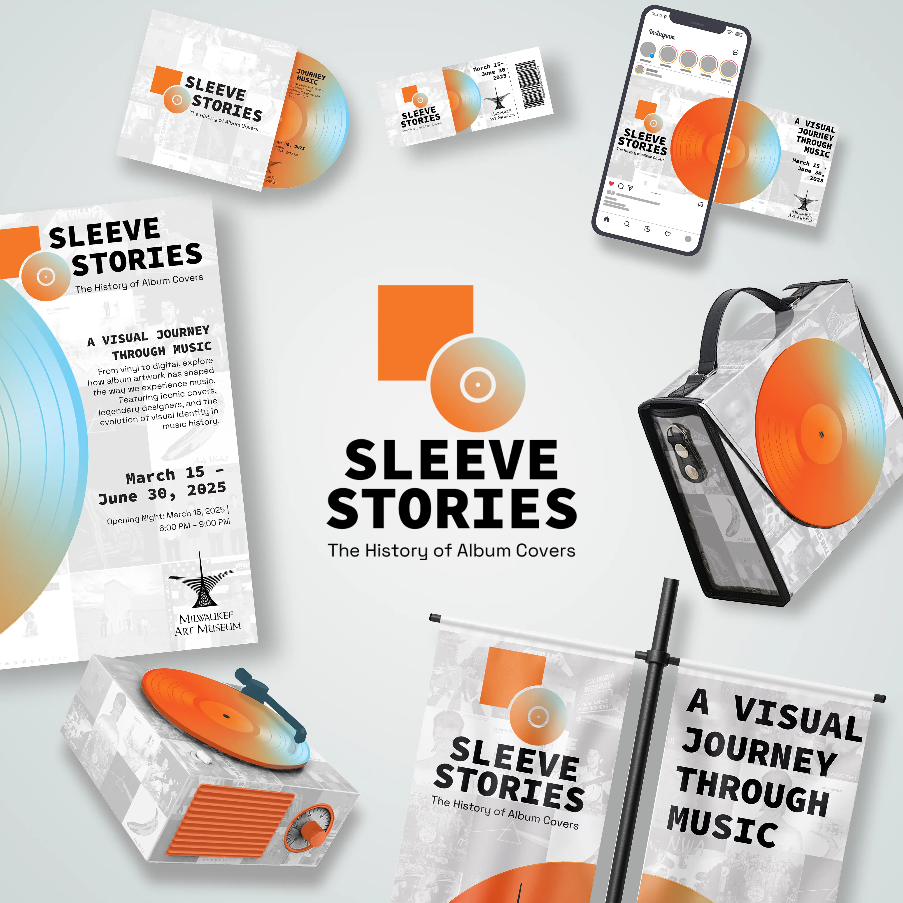
- Identity Design
 Print Design
Print Design- Social Media
- Motion Graphics
Project Brief
The assignment was to design a short-term identity system for a conceptual museum exhibit about a moment in design history. I chose the evolution of album cover art and set the exhibit, Sleeve Stories, at the Milwaukee Art Museum.
The challenge was serving two audiences at once. The identity had to honor the analog history of album art for longtime collectors and still feel current to a younger, streaming-first crowd. That meant one visual voice that bridges vinyl, CD, and streaming instead of picking a single nostalgic era.
Final Design
The logo pairs an orange square, the sleeve, with a record sliding out of it. It reads literally from the name and still holds up as a clean mark at small sizes, in both stacked and horizontal versions.
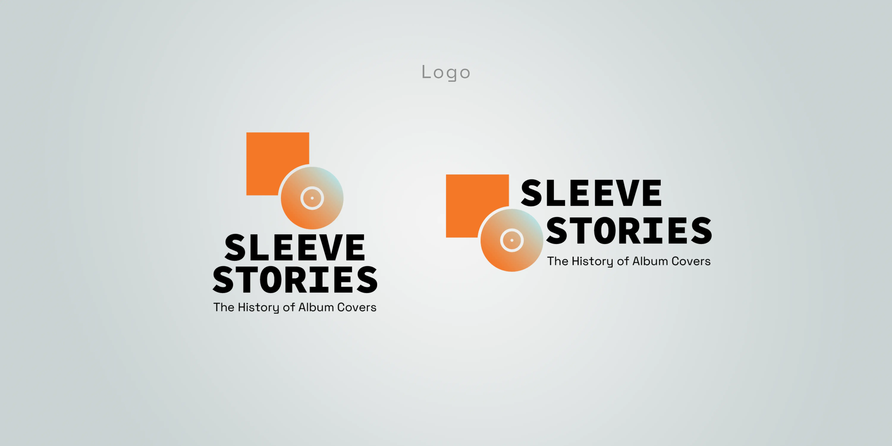
Behind every piece, a grayscale grid of iconic album covers runs as a watermark. Instead of illustrating the theme once on a poster, the grid makes the point on every touchpoint: today’s cover art is built on decades of design history. On top of it sits a large vinyl record in an orange-to-blue gradient, the system’s one bold color moment.
- Orange
#F57825 - Blue
#B6DEE0 - White
#FFFFFF - Black
#000000 - Gradient
Orange to blue
- Source Code Variable Black
- Logo and headers
- Space Grotesk
- Body copy and details
Warm orange and cool blue carry the mix of nostalgia and modern energy the brief called for, while black type on light backgrounds keeps every piece legible and current. The system stretches from print to screen to physical objects: a poster, a sleeve-style mailer that slides out a record-shaped info card, a ticket, street banners, an Instagram carousel, and two promotional items, a turntable-style Bluetooth speaker and a clear tote bag.
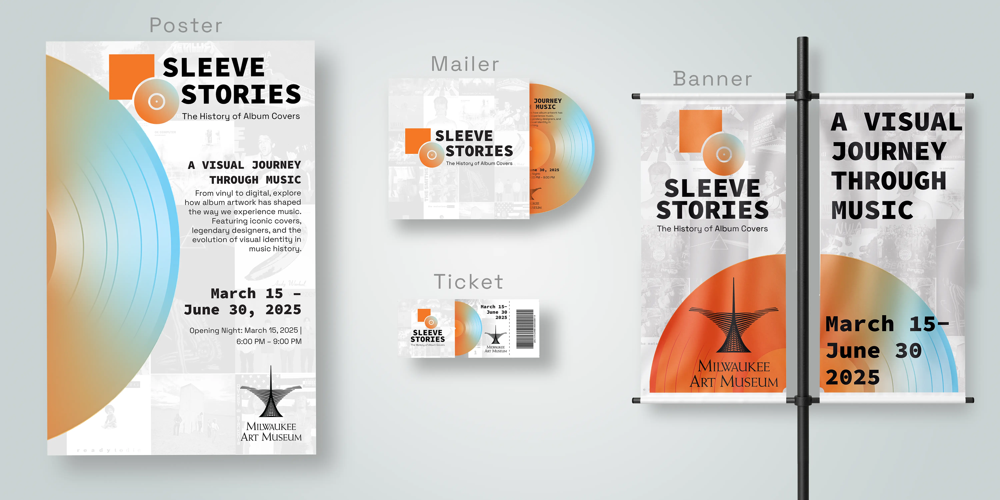
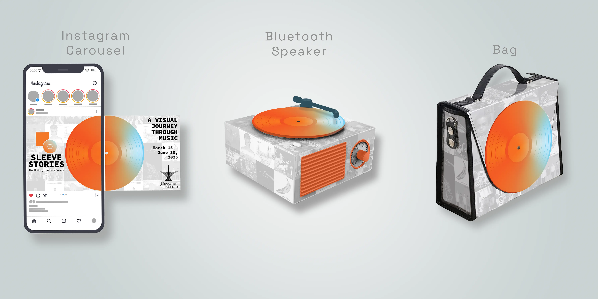
Process
I started by studying how album artwork evolved from the 1950s on, through designers like Reid Miles at Blue Note, Hipgnosis, and Peter Saville, whose covers did more than decorate the music; they defined an artist’s whole visual persona. That research set the bar for the identity: communicate mood and history at a glance. A moodboard of covers and exhibition graphics narrowed the palette to orange and blue, and a short rules sheet locked in the colors, type, and imagery before any final design began.
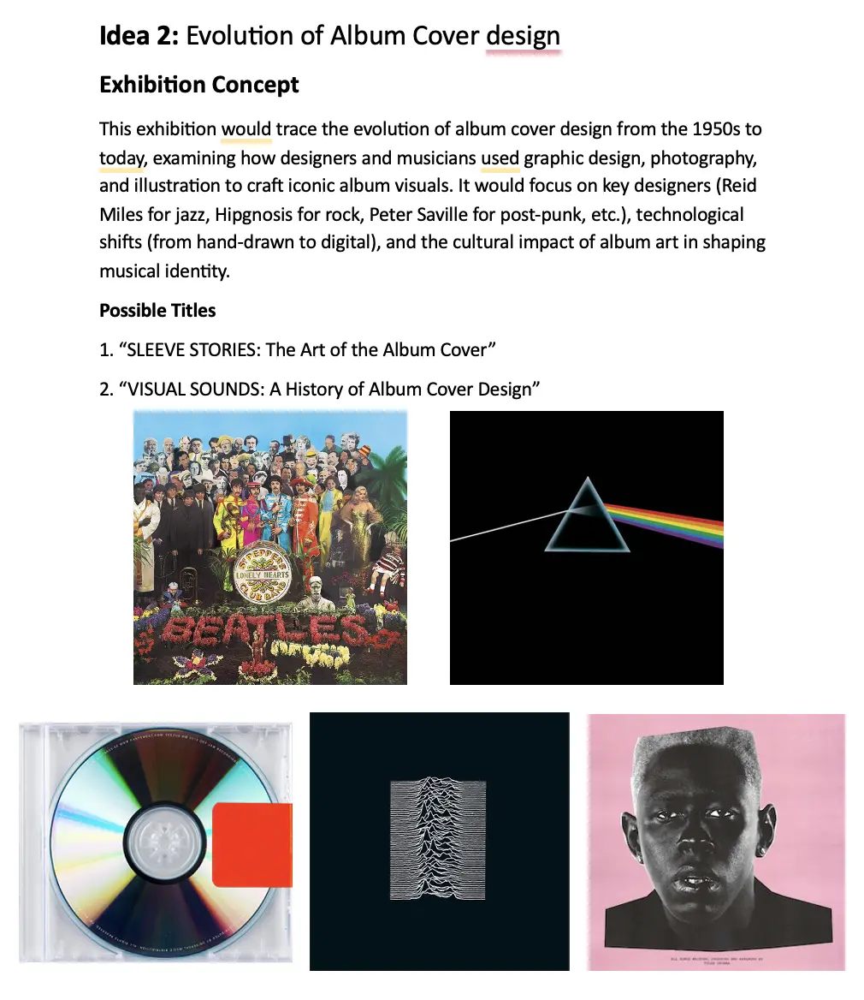
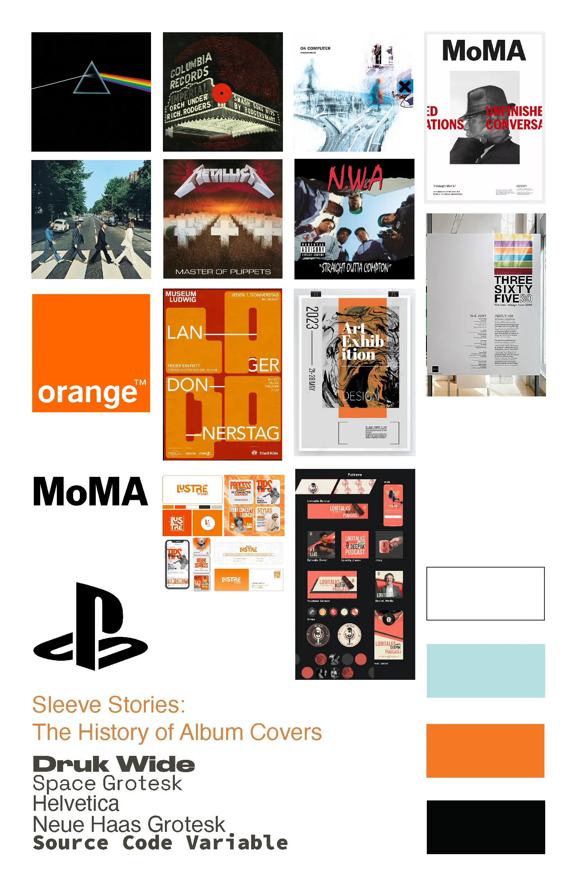
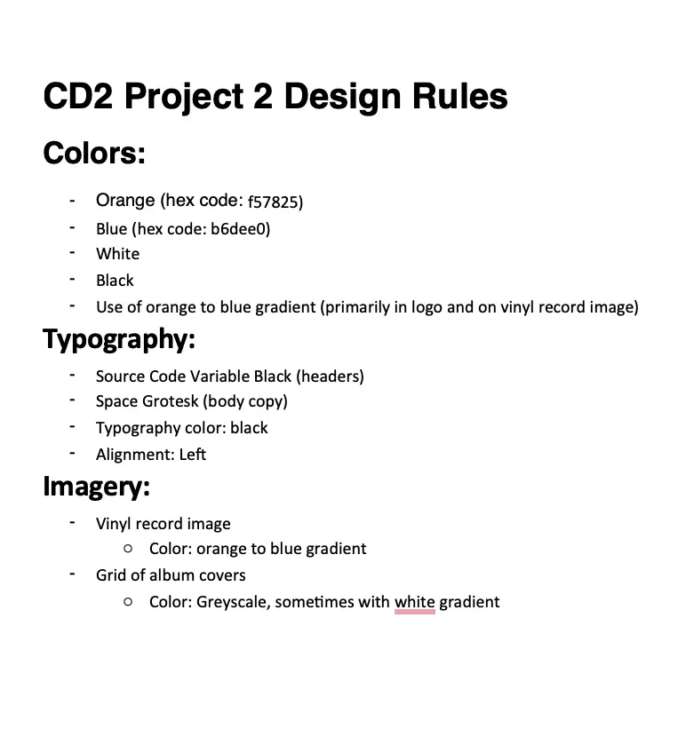
From there I sketched logo options and worked out three directions for the core pieces. Concept 1 put a half record on the poster and ticket. Concept 2 was a mailer that unfolds into a grid of album covers. Concept 3 was a mailer with a spinning record that reveals different cover art. The final system combines the half-record layout from the first concept with the album cover grid from the second.
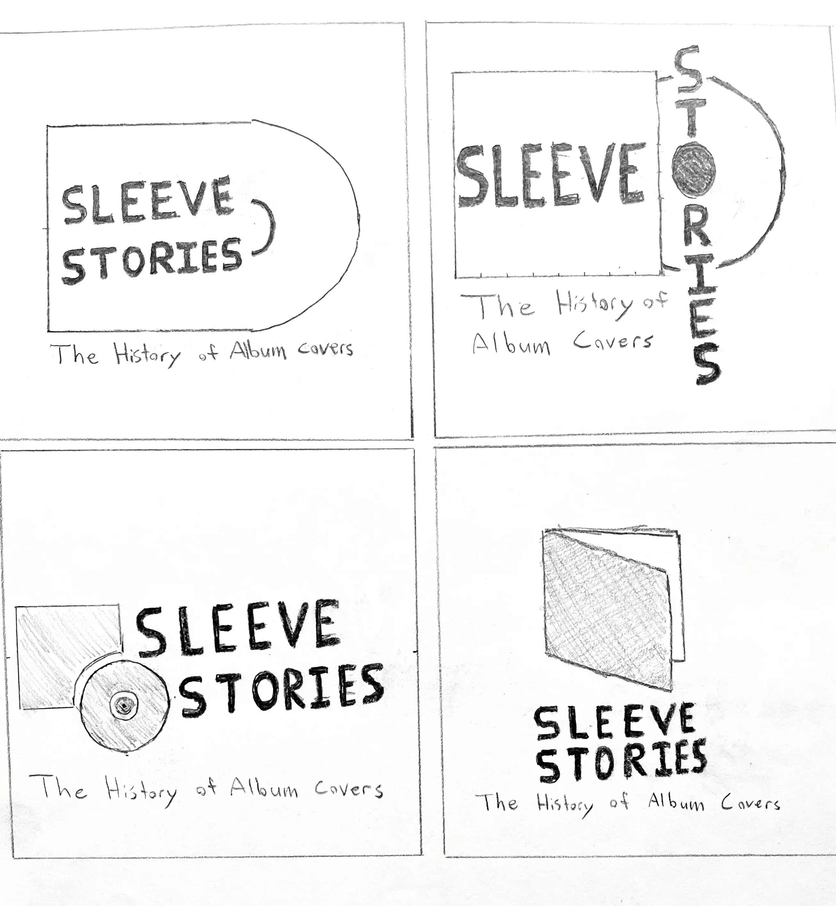
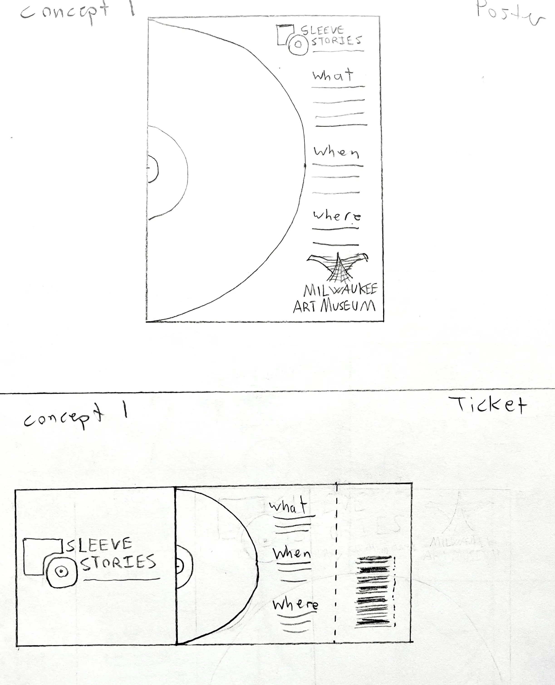
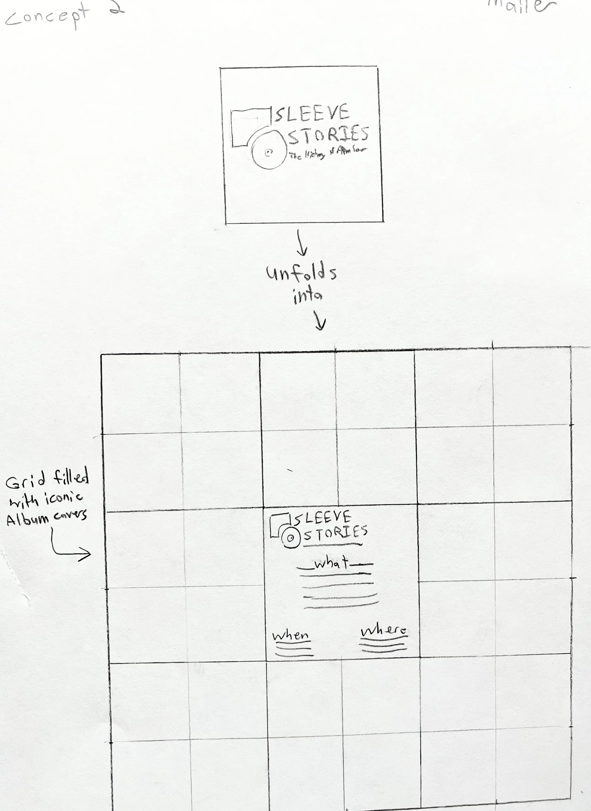
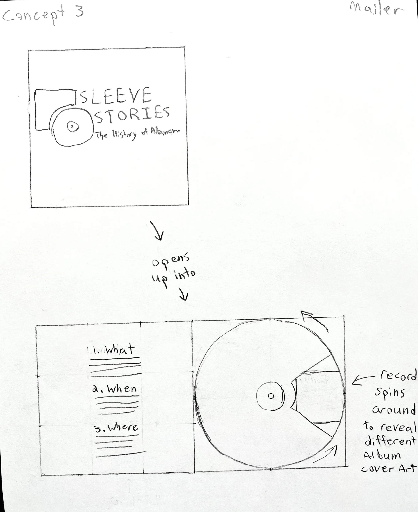
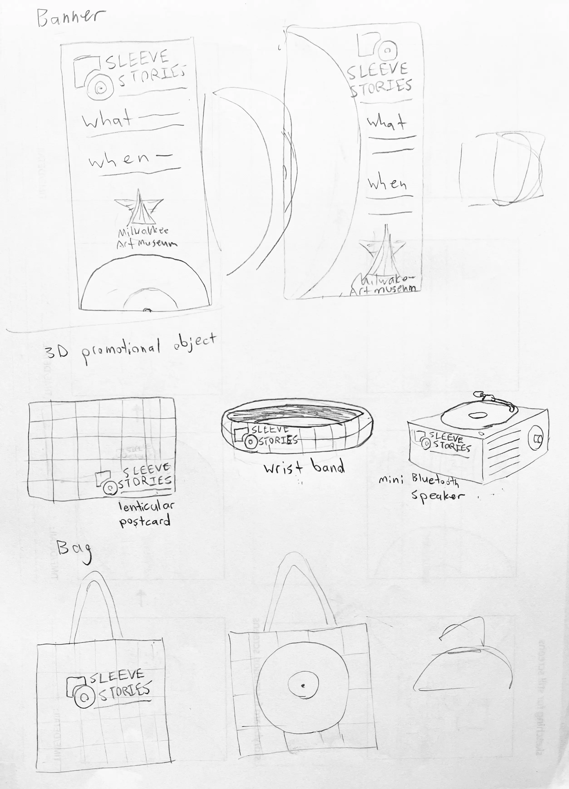
Closing Thought
The biggest lesson from Sleeve Stories was building a system, not a set of matching pieces. A shared logo and palette make things look related, but what holds an identity together across a poster, an Instagram carousel, and a 3D object is a small set of repeatable devices, here the gradient record and the album cover grid, applied consistently so the exhibit stays recognizable on anything.